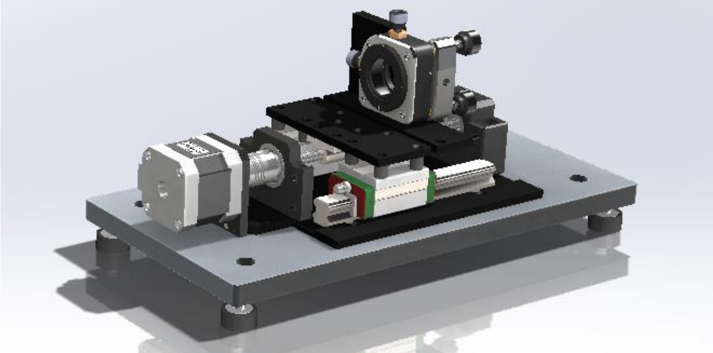
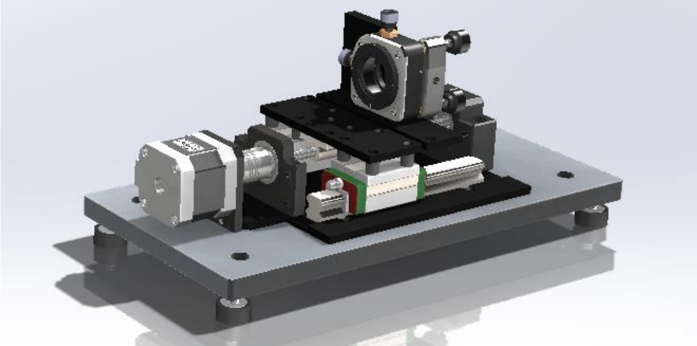

← Back to Projects
Optical Pressure Transducer — COMSOL Simulation & Test Platform
2024 · Capstone Project · University of Toronto
COMSOL Multiphysics
SolidWorks
Opto-mechanical Design
MEMS Concepts
Pressure Sensing
Simulation
Data Acquisition
Testing Platform
Gallery
 


Overview
- Capstone project focusing on the design and simulation of an optical pressure transducer for harsh environments.
- Developed a COMSOL-based multiphysics model to study mechanical deformation and optical signal shift.
- Proposed a test platform concept combining optical fiber, pressure chamber, and data acquisition system.
- Validated the transducer concept through simulation–experiment correlation and prototype mock-up.
Simulation & Modeling
- Built a 3D axisymmetric model of a silicon diaphragm coupled with an optical cavity.
- Analyzed pressure–deflection relationship (0–5 MPa) and stress distribution under thermal coupling.
- Performed optical mode shift analysis to correlate deflection with wavelength change.
- Optimized geometry and material parameters for sensitivity and mechanical reliability.
Testing Platform Development
- Designed a pressure chamber and clamping fixture for optical signal measurement.
- Integrated fiber alignment holders and micrometer stages for repeatable positioning.
- Planned DAQ and LabVIEW interface for synchronized pressure–optical data collection.
- Established calibration and safety protocols for future physical validation.
Results & Discussion
- COMSOL results predicted linear pressure–wavelength response up to 4 MPa.
- Identified potential nonlinear zones near mechanical limits and verified stress safety factors.
- Prototype fixture successfully aligned optical fiber and maintained leak-tightness during preliminary setup.
- Planned further refinement for full-scale testing and packaging optimization.